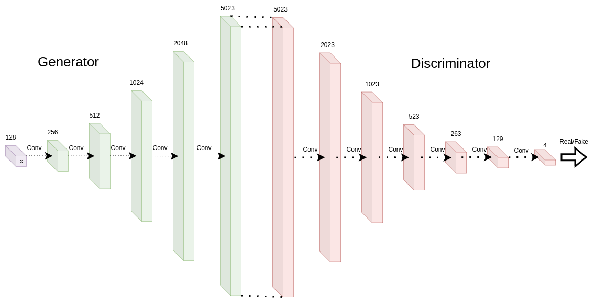
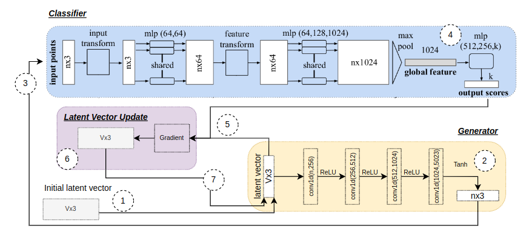

Controllable Point Cloud Expression GAN
Overview
Controllable GANs are an extension to the vanilla Generative Adversarial Network architecture which enables unsupervised feature controlled content generation. The normative structure leverages the knowledge embedded in a pretrained classifier to control the features of generated output. The classifier is used to manipulate the latent noise vector to move in the direction of a desired feature within the generators input latent space. In the case of PCE-GAN we employ a PointNet classifier trained on various point cloud facial expressions and a modified DCGAN to generate point cloud faces.
Modified DCGAN
Deep Convolutional GANs leverage the modelling power granted by convolutional layers. Typically convolutional are used in the context of 2D image generation. However, a similar architecture can be adapted to 3D point cloud data. The modified DCGAN architecture is shown below. The model consists of 5 one dimensional convolutional layers for the generator and seven one dimensional convolutional layers for the discriminator. The 1D convolutions are well suited for point cloud data as they are able to treat the list of (x,y,z) coordinates as a 1D signal with 3 channels - analogous to color channels in a 2D image.
PCE-GAN
The PCE-GAN architecture is shown below. The model consists of a modified DCGAN generator and discriminator, a pretrained PointNet classifier and a modified latent noise vector. The latent noise vector is modified by the classifier to move in the direction of a desired feature. The classifier is used to generate a feature vector which is then used to modify the latent noise vector. The modified latent noise vector is then used as input to the generator to generate a point cloud face.
Results
It is important for this work to consider both quantitative and qualitative results. Quantitative results are important to remove bias and have an objective comparison measure for future works. However qualitative results are vital as humans are especially sensitive to subtle changes in facial expressions and as such are able to provide a more practical evaluation of the models performance.
Quantitative Results
The below table shows the quantatative metrics for results generated before adding any latent vector control. Included in these results are two comparison papers namely CoMA autoencoder and MeshGAN.
| Method | Generalization (mm) | Specificity (mm) | FID |
|---|---|---|---|
| CoMA | 0.442 ± 0.116 | 1.60 ± 0.22 | 14.24 |
| MeshGAN | 0.465 ± 0.189 | 1.433 ± 0.14 | 10.82 |
| PCE-GAN | 0.747 ± 0.0163 | 0.809 ± 0.0334 | 13.27 |
| Expression | Generalization (mm) | Specificity (mm) | KID | FID |
|---|---|---|---|---|
| Bare teeth | 1.161 ± 0.157 | 0.8788 ± 0.2698 | 0.87 | 16.59 |
| Cheeks in | 1.329 ± 0.006 | 1.162 ± 0.384 | 0.63 | 15.48 |
| Mouth Open | 0.957 ± 0.148 | 0.7610 ± 0.1662 | 0.32 | 13.03 |
| High Smile | 0.7771 ± 0.0198 | 1.032 ± 0.388 | 0.59 | 15.05 |
Qualitative
The figures bellow show the control process where successive frames are each an independent generation of a new face after latent vector manipulation informed by the classifiers gradients conditioned on the previous face. On the right of the faces one can see the classifiers predicted probability of each target expression (left cheeks in and right mouth open). One can see that successive generations are temporally and physically valid which allows intermediate generations to be used as animation keyframes for facial expression changes.


Live demo
Bellow one can see a live render of some of the final generated results of PCE-GAN. The interactive demonstration contains 10 faces - first the triangle mesh obtained by Poisson surface reconstruction followed by the point cloud that PCE-GAN generates (used in the prior surface reconstruction).
Controls:
- Mouse left click and drag to rotate.
- Scroll wheel to zoom.
- N or n to get the next result.